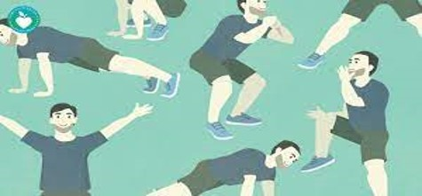
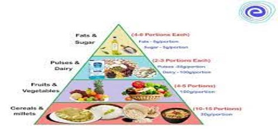

Obesity
Obesity is a complex disease involving an excessive amount of body fat. Obesity isn't just a cosmetic concern. It's a medical problem that increases the risk of other diseases and health problems, such as heart disease, diabetes, high blood pressure and certain cancers
There are many reasons why some people have difficulty losing weight. Usually, obesity results from inherited, physiological and environmental factors, combined with diet, physical activity and exercise choices.
Is obesity on the rise in India?
The prevalence of overweight and obesity in India is increasing faster than the world average. For instance, the prevalence of overweight increased from 8.4% to 15.5% among women between 1998 and 2015, and the prevalence of obesity increased from 2.2% to 5.1% over the same period.
Causes Of Obesity
Obesity is generally caused by eating too much and moving too little. If you consume high amounts of energy, particularly fat and sugars, but do not burn off the energy through exercise and physical activity, much of the surplus energy will be stored by the body as fat.
Eating large amounts of processed or fast food – that's high in fat and sugar
Drinking too much alcohol – alcohol contains a lot of calories, and people who drink heavily are often overweight
Eating out a lot – you may be tempted to also have a starter or dessert in a restaurant, and the food can be higher in fat and sugar
Eating larger portions than you need – you may be encouraged to eat too much if your friends or relatives are also eating large portions
Drinking too many sugary drinks – including soft drinks and fruit juice
Comfort eating – if you have low self-esteem or feel depressed, you may eat to make yourself feel better
What should be the preventive measures for Obesity?
|  |
 |
Exercise would be the best option to overcome the factor of Obesity.
Balanced Diet also plays a important role in obesity.
The most important strategies for preventing obesity are healthy eating behaviors, regular physical activity, and reduced sitting activities (such as watching television and videotapes, and playing computer games).